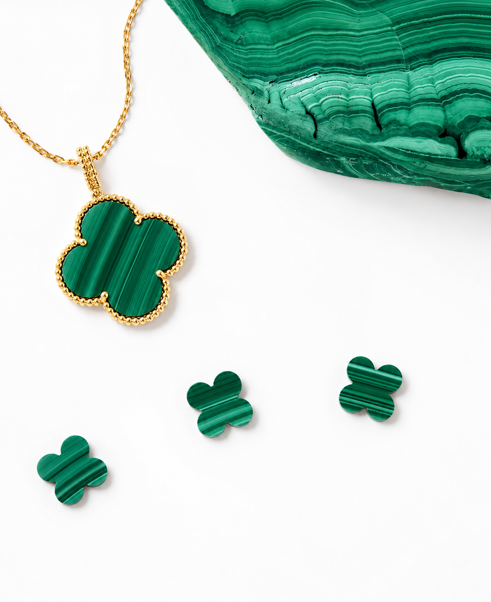
PRESS AND HOLD+
Alhambra did not begin with a completely new shape. The four-leaf clover had already appeared within Van Cleef & Arpels’ visual language for decades. What changed in 1968 was the way that familiar symbol was organized. Through repetition, spacing, framing, and consistency, the clover became more than a motif: it became a system capable of generating new pieces while remaining recognizable.
Before it became an enduring piece of jewelry, the four-leaf clover belonged to the Maison’s wider vocabulary of luck.
Scroll through the archives to discover how a familiar natural symbol became the foundation of a repeatable design.
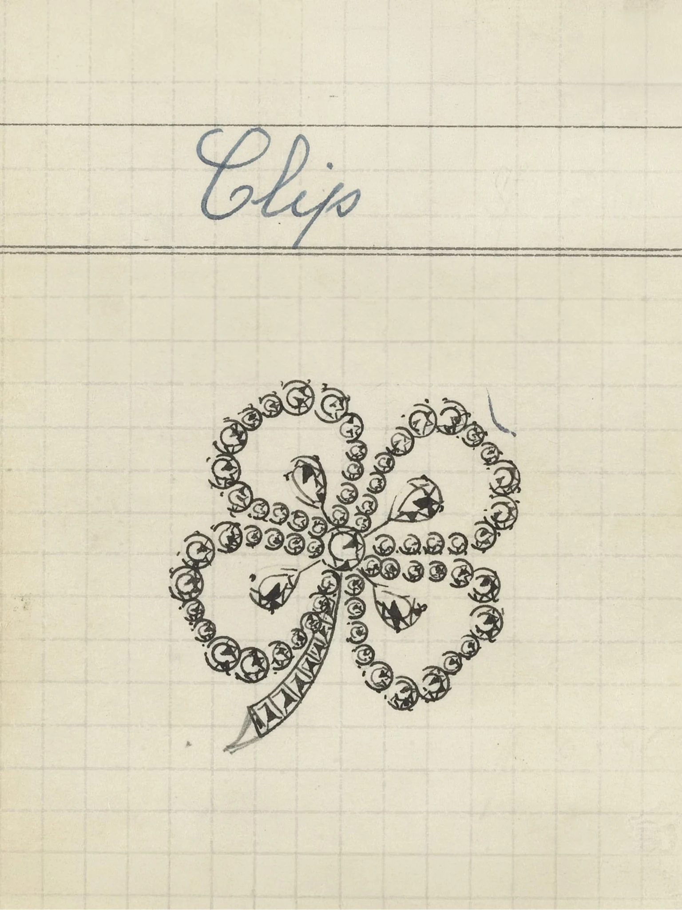
Long before Alhambra became one of Van Cleef & Arpels’ most recognizable collections, the four-leaf clover already belonged to the Maison’s visual language. According to the Maison’s archival history, clover motifs can be traced back to 1906, appearing alongside charms, wooden talismans, fairies, and other symbols associated with good fortune.
At that point, the clover was not a fixed collection or standardized design. It was one recurring sign within a much broader vocabulary of luck. Archival product cards show the house repeatedly returning to clover forms in clips, pendants, and other objects. The 1948 clip design here records that early fascination: a familiar leaf structure translated into jewelry through drawing and ornamental detail.
The four rounded leaves already contained qualities that would later become essential to Alhambra. Their symmetry gives the shape order; the outline establishes a boundary; and the simple geometry remains legible even when reduced, enlarged, or translated into different materials. The motif could change its surface without changing the basic silhouette.
The idea of luck gave this formal clarity another layer of meaning. Jacques Arpels was known to pick four-leaf clovers and offer them to employees as good-luck charms. A pressed clover is fragile, ordinary, and almost without monetary value, yet it can communicate an intention from one person to another.
“To be lucky, you have to believe in luck.”— Jacques Arpels
Jewelry encourages a similar kind of symbolic exchange. It can be worn near the body, offered as a gift, kept across generations, or connected to particular moments. When the familiar clover is incorporated into a jewel, the object functions at once as decoration and as a carrier of personal meaning.
Before 1968, however, the many versions of the clover remained individual interpretations, rather than parts of a single coherent collection. Their materials, proportions, and settings could vary, and they shared a symbol without yet sharing a consistent set of visual rules.
The origin of Alhambra is therefore less about inventing a new symbol than recognizing the potential of one that already existed. The Maison possessed the shape, its association with fortune, and decades of visual memory. What came next was to give that familiarity structure.
In 1968, Van Cleef & Arpels created the first Alhambra long necklace: twenty clover-shaped motifs in creased yellow gold, each edged with tiny gold beads. A familiar sign now appeared not once but as a precisely organized sequence.
The four-leaf silhouette provided a stable unit, the beaded border gave it a recognizable frame, and the connecting chain created controlled intervals. These simple decisions established a structure that could continue across different pieces.
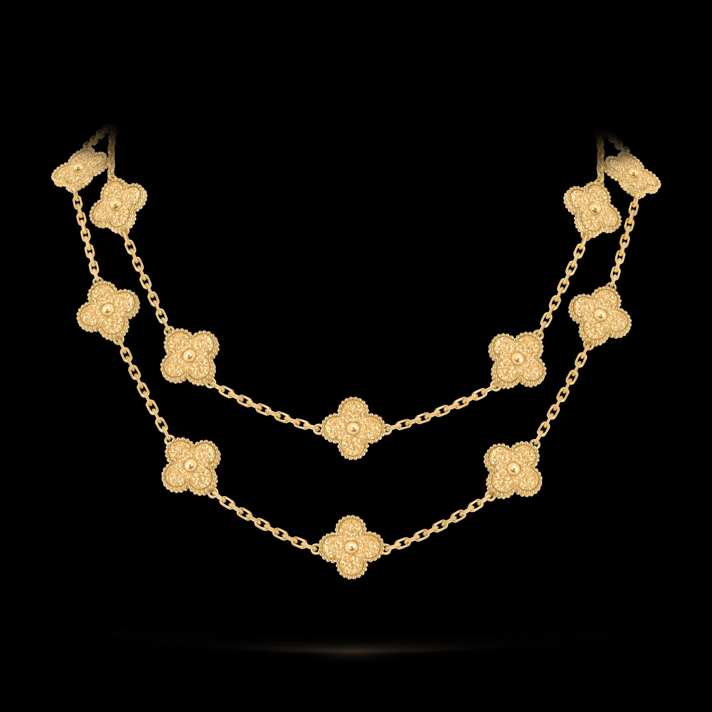
A single clover functions as an image. Twenty clovers establish relationships between images: distance, direction, rhythm, and movement. The viewer encounters each motif, pauses in the negative space, then returns to the same shape again. Repetition creates a visual grammar.
The necklace is also a moving composition. As it shifts with the wearer, its intervals change position without losing their underlying order. Viewed from a distance, the pieces become a continuous line; up close, each clover reveals its own surface and edge.
This is what makes 1968 more than the year of one successful object. It marks the moment at which an existing lucky symbol became the organizing module of a collection.
Over time, repetition made the Alhambra form easier to recognize. The necklace crossed from the display case to the body and into fashion photography. Each new appearance returned the viewer to a familiar silhouette.
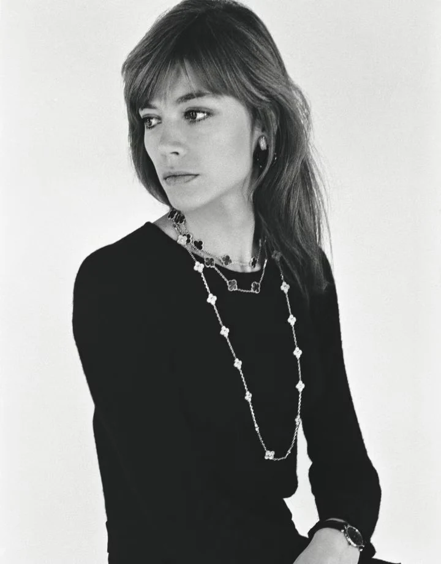
In archival images of Françoise Hardy wearing two Alhambra sautoirs in 1973, the individual motifs appear as a rhythm across the body. The pieces shift with movement, yet their shape remains recognizable: jewelry is not a fixed printed pattern, but a visual system responding to the wearer.
The clover can work simultaneously at two distances. Seen as a whole, the necklace reads as a line of repeated marks; examined closely, each mark becomes a material object in its own right.
Princess Grace of Monaco was photographed wearing three Alhambra sautoirs in 1979. Worn in layers, the necklaces demonstrate how one design can shift in quantity and arrangement without requiring a new visual identity.
As the collection appeared across archival photographs, fashion imagery, and different jewelry types, recognition began to belong to the silhouette itself. A product became a signature: a form familiar even before the viewer identified the precise stone or object.
The Alhambra Palace in Granada offers another way to understand how a simple decorative form can become part of a larger visual system.
Its ornament uses rhythm and repetition to connect individual forms across an architectural space.
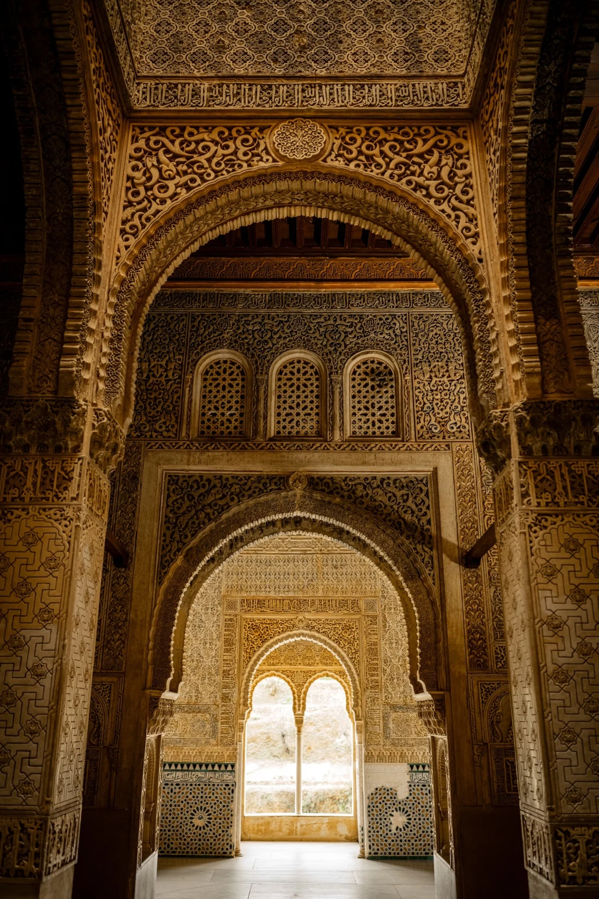
The name Alhambra opens a visual connection to the palace complex in Granada, where architecture and ornament are closely integrated. Geometry, vegetal forms, inscription, color, and carved surfaces repeat across walls, arches, ceilings, and tilework, turning the architecture into a continuous visual system rather than a collection of isolated decorations.
This publication does not treat the jewelry motif as a literal copy of one specific palace ornament. Instead, the palace offers a useful way to think about how repetition can organize a larger whole. Individual decorative elements recur across different surfaces, creating rhythm and continuity throughout the architecture.
The comparison therefore operates at the level of system rather than direct form. The palace surrounds the body through repeated ornament, while the necklace organizes repeated motifs around the body. In both cases, recognition emerges through the return of related visual elements.
The geometric decoration of the Alhambra shows how a simple unit can become complex through repetition. Small shapes are repeated, rotated, reflected, and combined to create larger patterns. The viewer no longer reads only one form; the eye begins to follow rhythm, interval, symmetry, and relationships between repeated elements.
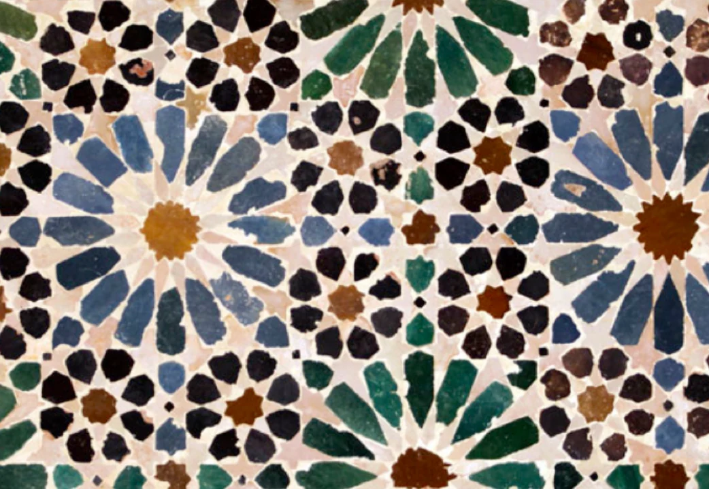
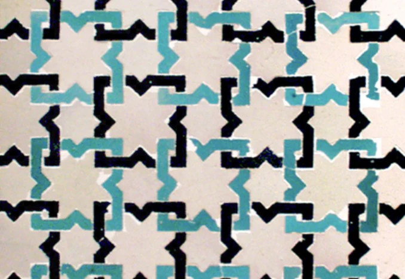
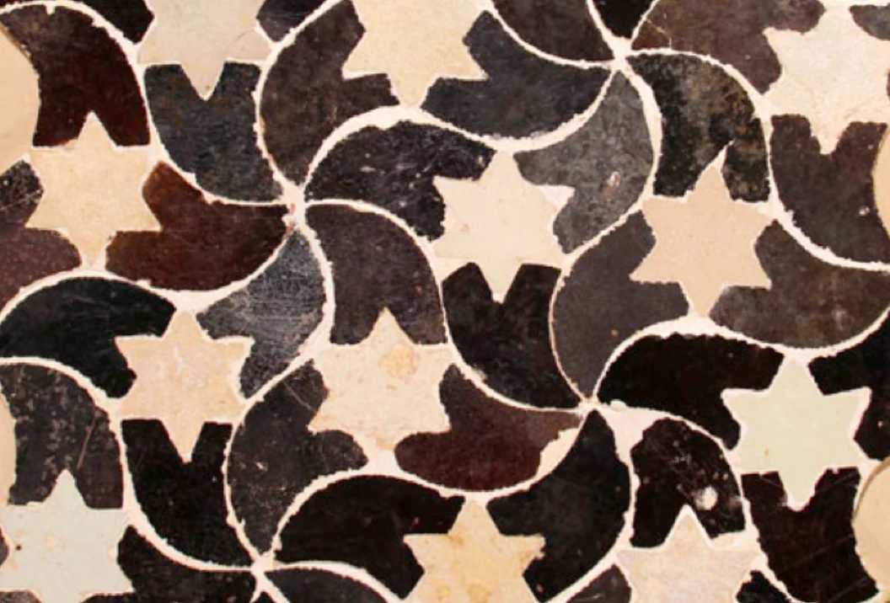
This idea creates a useful parallel with the Alhambra necklace. A single four-leaf clover is one recognizable motif. When the motif repeats across a chain, it becomes part of a larger visual sequence. The spaces between motifs, their consistent scale, and their relationship to the chain create rhythm in the same way that repeated geometric units organize an architectural surface.
The connection is not that the jewelry copies the palace. Instead, both demonstrate the same design principle: a limited visual vocabulary can generate a much larger system through repetition.
Once its rules were established, Alhambra could change without losing its identity. The same outline could hold mother-of-pearl, malachite, carnelian, black onyx, textured gold, or diamonds. Different colors and surfaces altered the mood of an individual jewel but returned to the same basic frame.
The module could also move between forms: one motif as a pendant, five along a bracelet, ten or twenty as a necklace, or two as earrings. Like a modular graphic identity, it could be rearranged without requiring an entirely new symbol each time.
Consistency was not the opposite of variation; it made variation possible. Repeated exposure strengthened recognition, while each new material or arrangement renewed the experience of the motif.

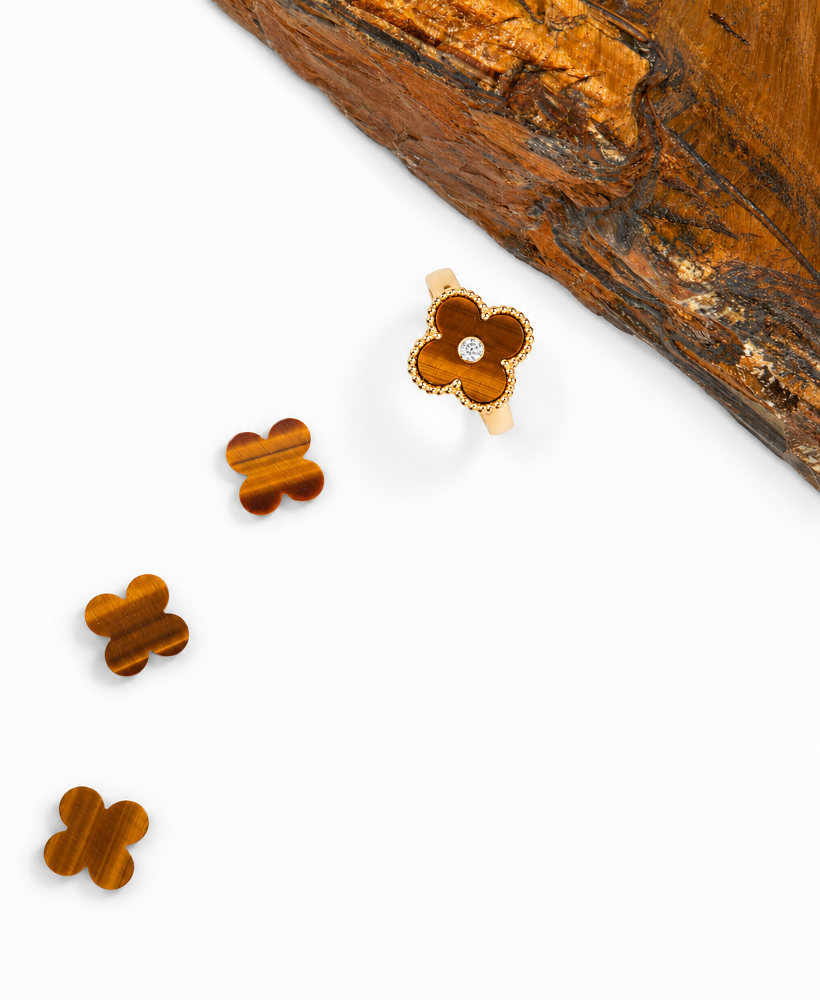
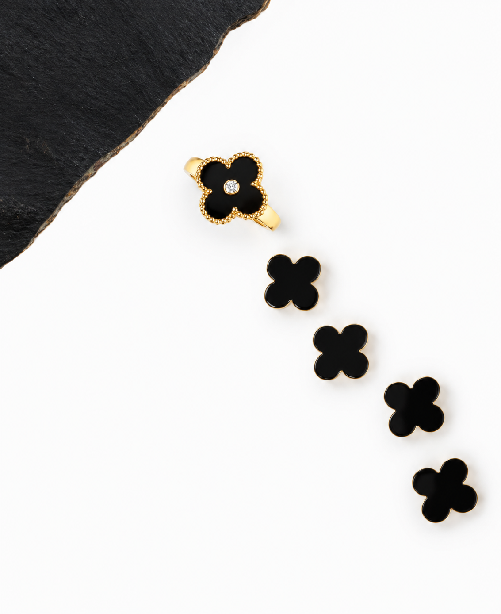
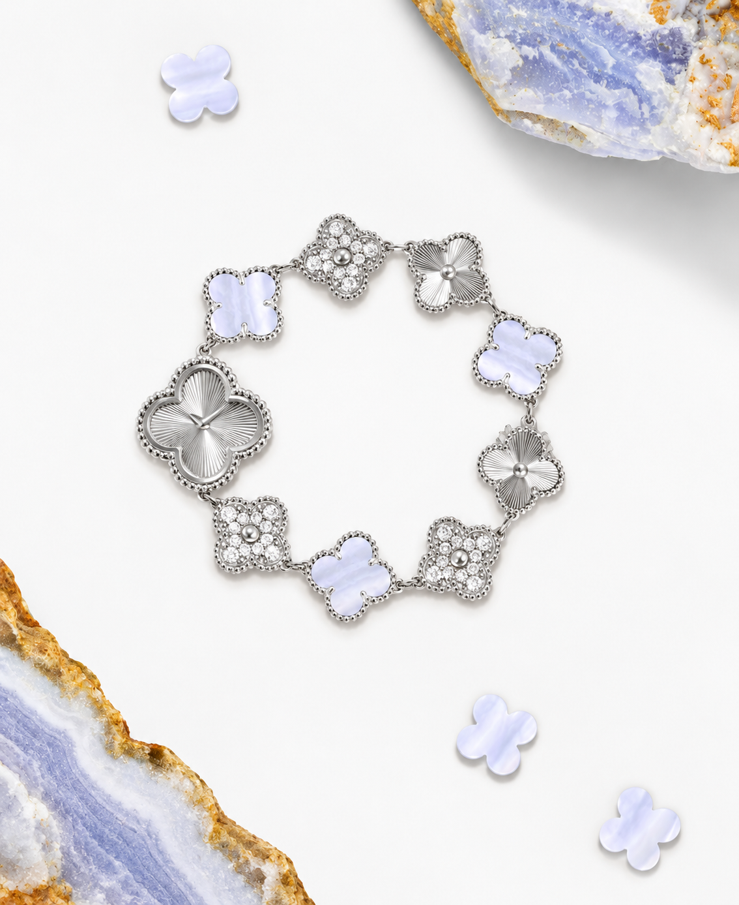
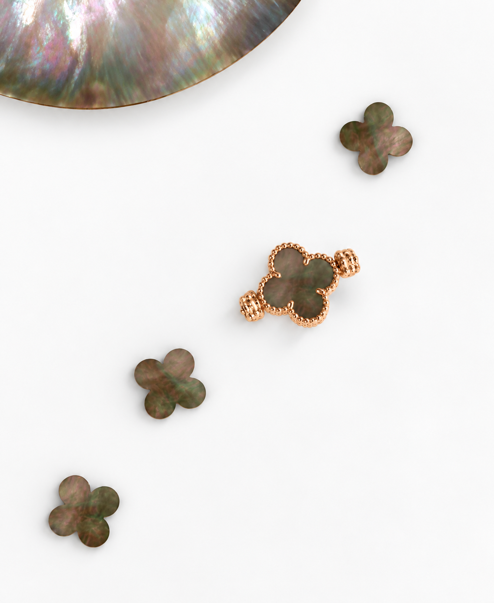
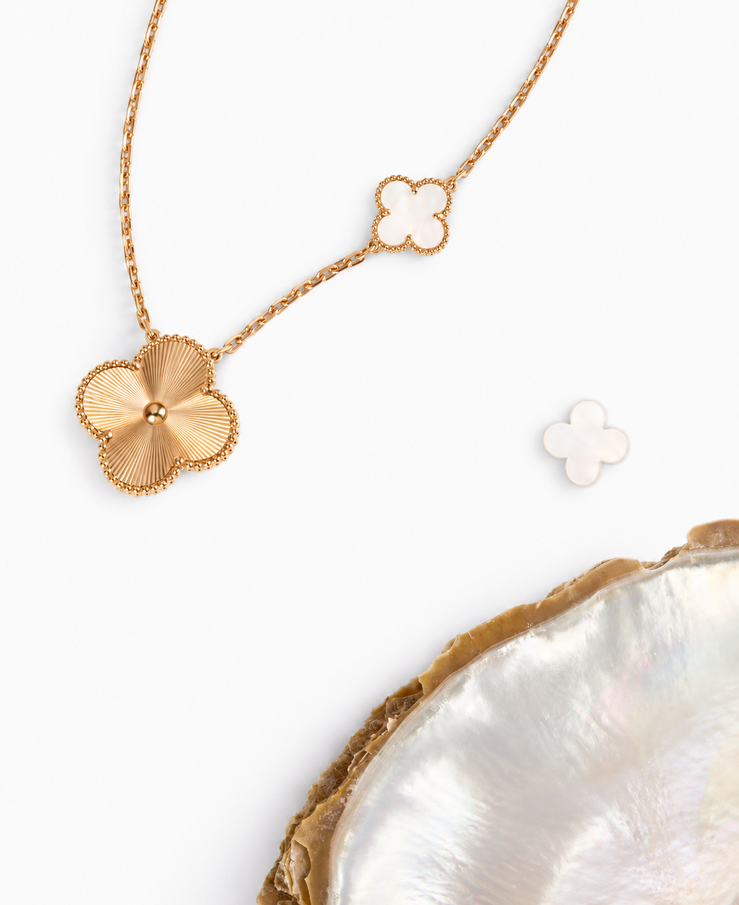
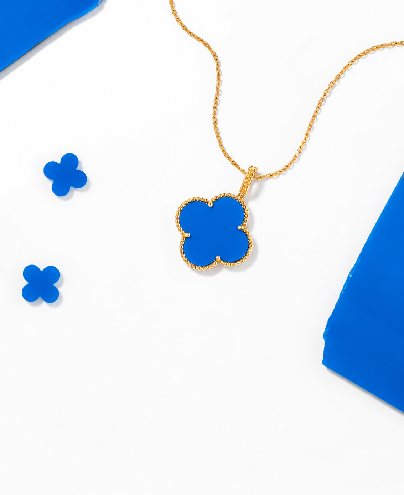
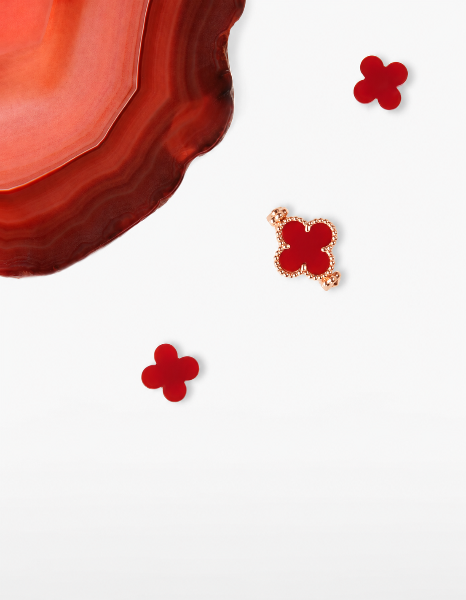
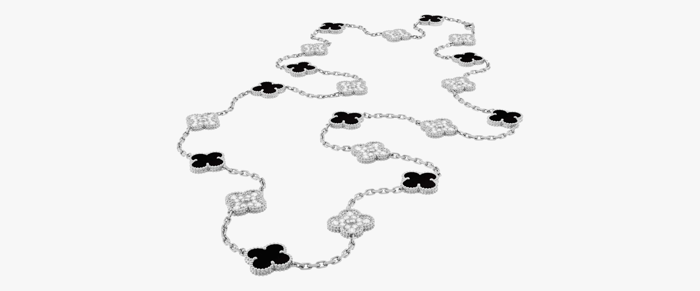
The clover became a module.
The module became a system.